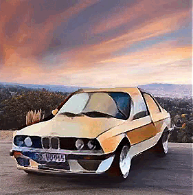
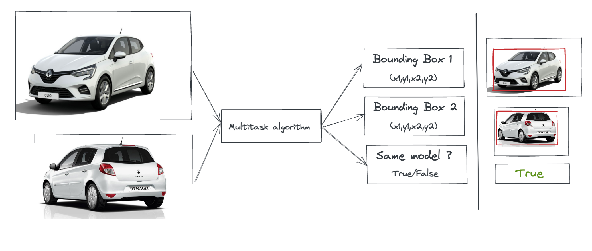

Je travaille actuellement sur la détection de parties de véhicules sur des vidéos et j'ai décidé d'explorer le transfert de style et les modèles de segmentation sémantiques. Le transfert de style consiste à apprendre une représentation du style d'une image et du contenu d'une autre image pour générer une image artistique combinant les deux. En combinant ce principe avec la segmentation sémantique nous pouvons transférer le style à une partie de l'image contenu. L'inference naive sur des vidéos donne des résultats instables ce qui m'a poussé a exploré une perte temporelle pour stabiliser les résultats et créer des vidéos artistiques. J'ai décidé de travailler sur ce projet personnel pour continuer à apprendre des techniques de Deep Learning en parallèle avec mon travail en projet avec des détecteurs de parties automobiles en une étape.

L'algorithme multitâche a pour objectif de vérifier la similarité entre deux modèles de véhicules et de les localiser. J'ai préféré adopté une approche end to end Deep Learning avec un script qui fait appel à deux modèles pour résoudre le problème. J'ai implémenté un réseau siamois en m'inspirant d'un papier scientifique très récent. Le but est de génerer des paires d'images, d'entrainer le réseau à trouver une representation vectorielle dans l'espace de caractéristiques pour différencier entre plus de 190 modèles de véhicules. Pour résoudre la tâche de localisation, j'ai fait appel à l'apprentissage par transfert pour générer une pile de caractéristique. Ensuite, j'ai modifier le réseau en ajoutant un bloc de régression.

Un projet très amusant à mettre en place vu mon attrait pour le cinéma. J'ai collecté des données des sites imdb et numbers par webscraping afin de comprendre les statistiques descriptives d'un score qui reflète la qualité des films. C'était l'occasion d'appliquer plusieurs modèles d'apprentissage automatique et comprendre leurs fonctionnements en pratique.